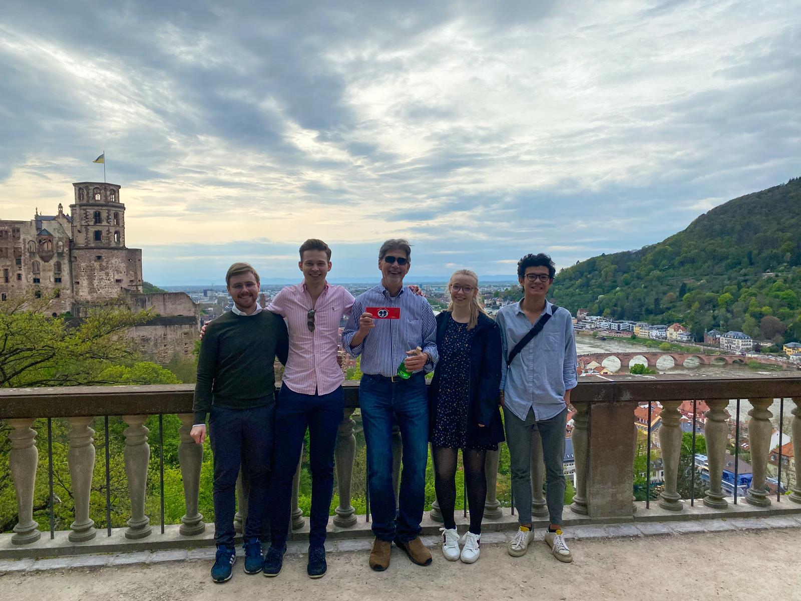
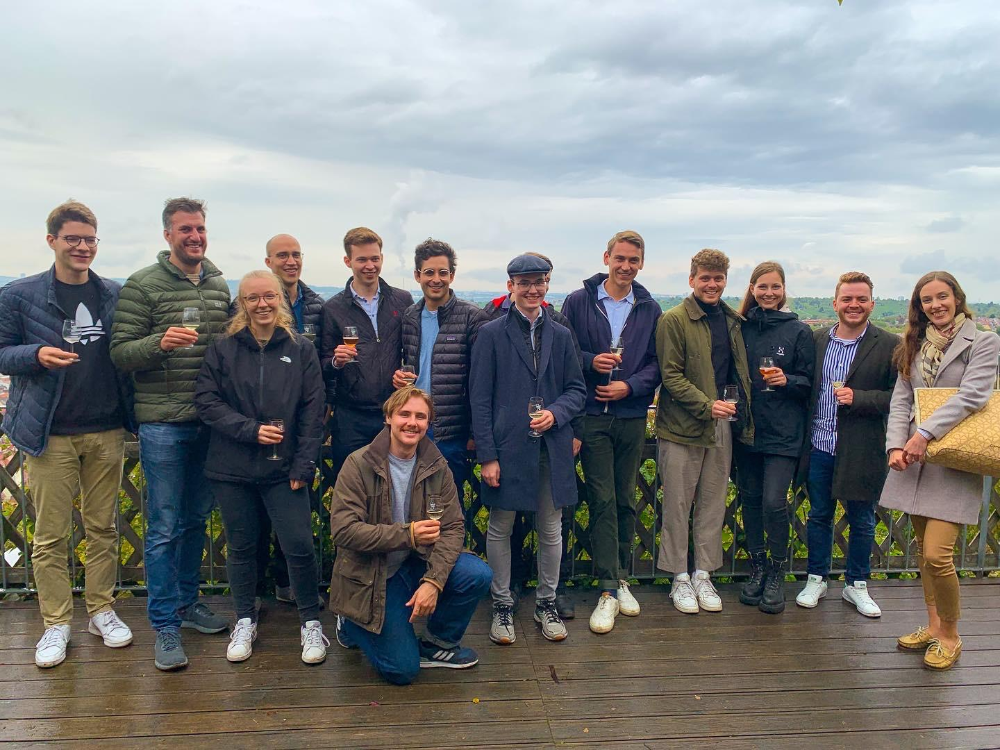
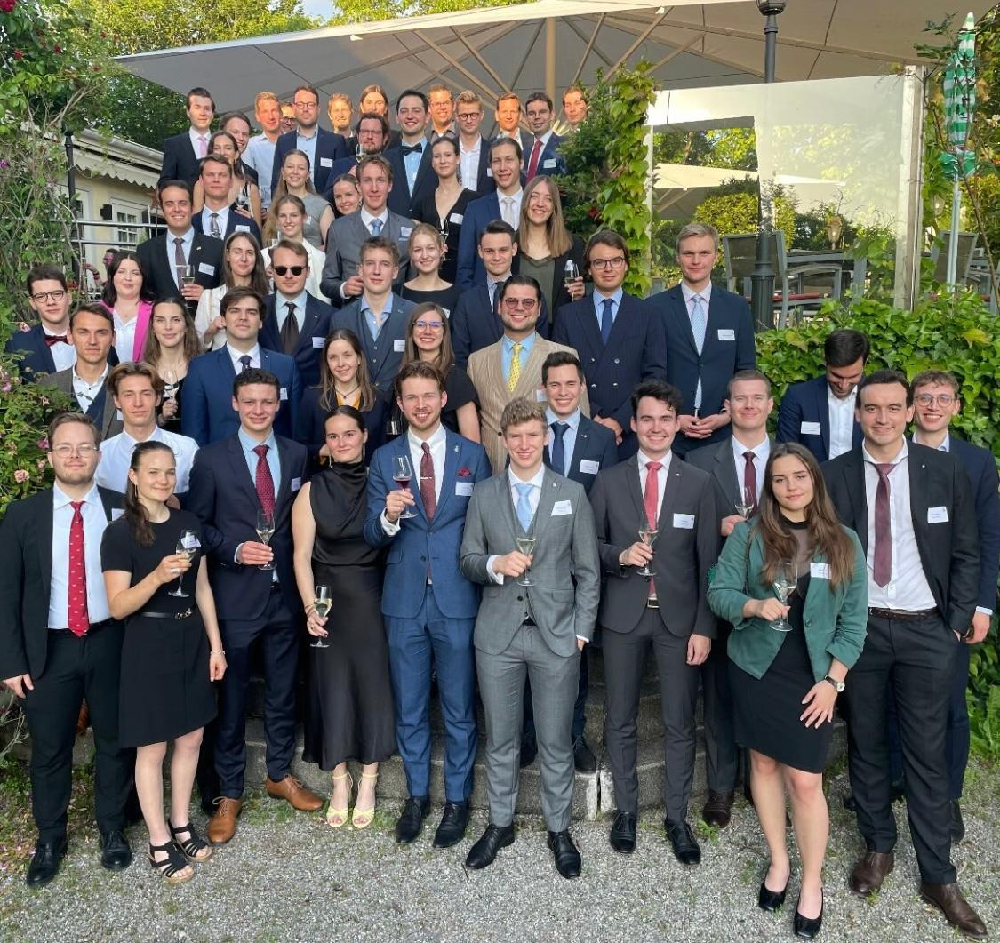
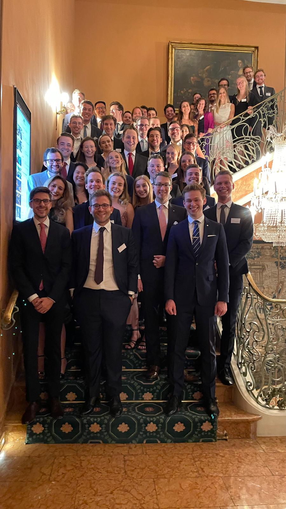
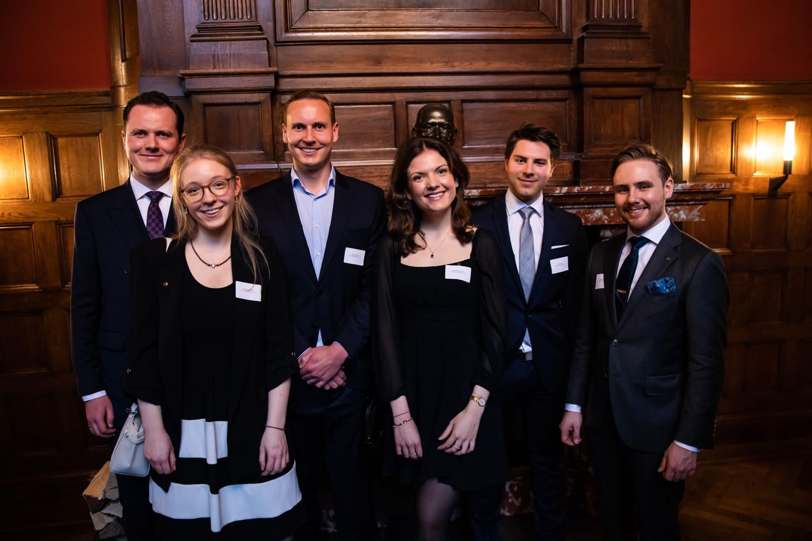

Über uns & Selbstverständnis
Geschichte, Vereinsarbeit sowie die regionale und internationale Vernetzung des Heidelberger Inns an der Ruprecht-Karls-Universität.
Geschichte und Ausrichtung
Phi Delta Phi wurde am 13. Dezember 1869 an der University of Michigan gegründet und ist damit die älteste bestehende juristische Vereinigung ihrer Art. Der Name leitet sich aus dem Griechischen ab (Philous Dikaiooi Philosophoi – „Freunde der Gerechtigkeit und der Weisheit“).
Im Unterschied zu klassischen Studentenverbindungen versteht sich Phi Delta Phi als überparteiliche und konfessionell ungebundene akademische Gesellschaft, die überdurchschnittliche Studienleistungen, wissenschaftliche Neugier, juristische Berufsethik und gesellschaftliche Verantwortung miteinander verbindet.
Neben unserem Heidelberger Inn bestehen in Deutschland enge Kontakte zu den Schwester-Inns in Frankfurt am Main, München, Tübingen und Hamburg (Bucerius Law School) sowie zum internationalen Dachverband in den USA.
Drei Grundsätze unserer Arbeit
Akademischer Anspruch: Vertiefung rechtswissenschaftlicher Fragen jenseits des Pflichtfachstoffs im direkten Austausch mit Wissenschaft, Justiz und Anwaltschaft.
Berufsethik: Bewusstsein für die besondere Verantwortung von Juristinnen und Juristen im demokratischen Rechtsstaat.
Gemeinschaft & Netzwerk: Jahrgangs-, standort- und länderübergreifendes Netzwerk vom Studium über die Promotion und das Referendariat bis in den Beruf.
Schwerpunkte unseres Vereinslebens
Monatstreffen · Wissenschaft & Praxis · Überregionale VernetzungMonatstreffen & Austausch
Bei unseren regelmäßigen Monatstreffen besprechen wir die laufende Vereinsarbeit und tauschen uns durch kurze Fachvorträge von Mitgliedern sowie Erfahrungsberichte zu Auslandsaufenthalten und Stipendien über juristische Themen aus. Zugleich bieten die Treffen Interessierten die Gelegenheit, das Inn persönlich kennenzulernen.
Jahresfeiern & Kanzleipartner
Wir veranstalten feierliche Jahresfeiern in der Alten Aula (u. a. mit Prof. Dr. Thomas von Danwitz und Prof. Dr. Rüdiger Wolfrum), pflegen den Austausch mit Lehrenden wie Hon.-Prof. Dr. Alexandra Schluck-Amend und richten mit unseren Kanzleipartnern CMS und Gleiss Lutz praxisnahe Workshops zu M&A, KI-Recht, ESG und Kartellrecht aus.
Schulprojekt & Kooperationen
Neben unserem Heidelberger Schulprojekt pflegen wir eine enge Zusammenarbeit mit dem Inn Frankfurt am Main (gemeinsame Aufnahmen, Soft-Skill-Kurse bei Covington und Alumni-Gesprächsrunden), veranstalten Bundestreffen der deutschen Inns und halten engen Kontakt zu Phi Delta Phi International.
Internationaler Besuch & Bundestreffen der deutschen Inns
Empfang des Executive Directors von Phi Delta Phi International in Heidelberg und gemeinsame Aktivitäten mit den deutschen Schwester-Inns.



Zusammenarbeit mit dem Inn Frankfurt am Main & Festabende
Regelmäßiger Austausch, gegenseitige Einladungen zu Festakten und gemeinsame Gesprächsrunden mit Alumni.

